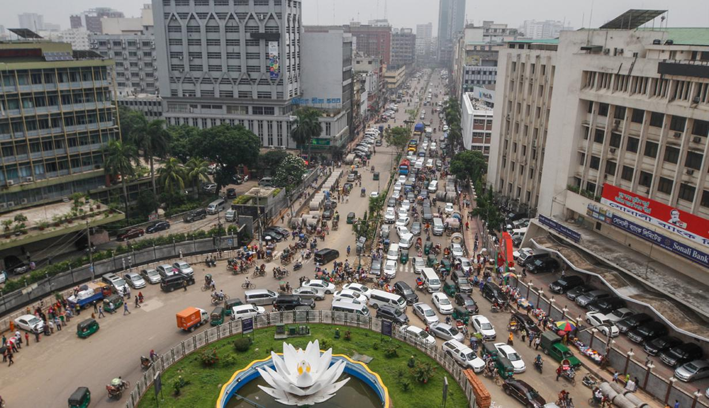
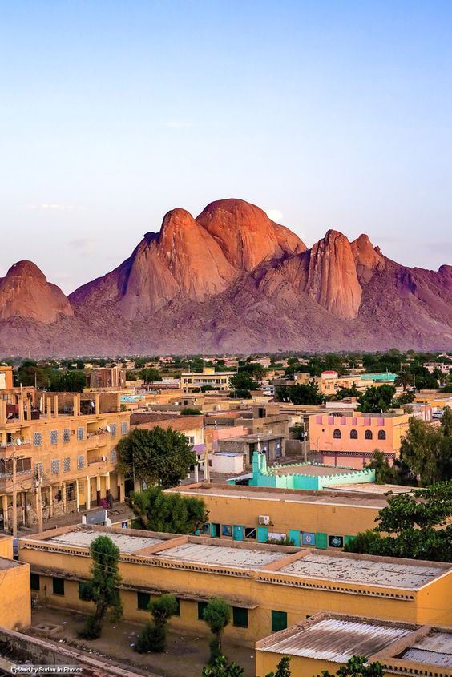
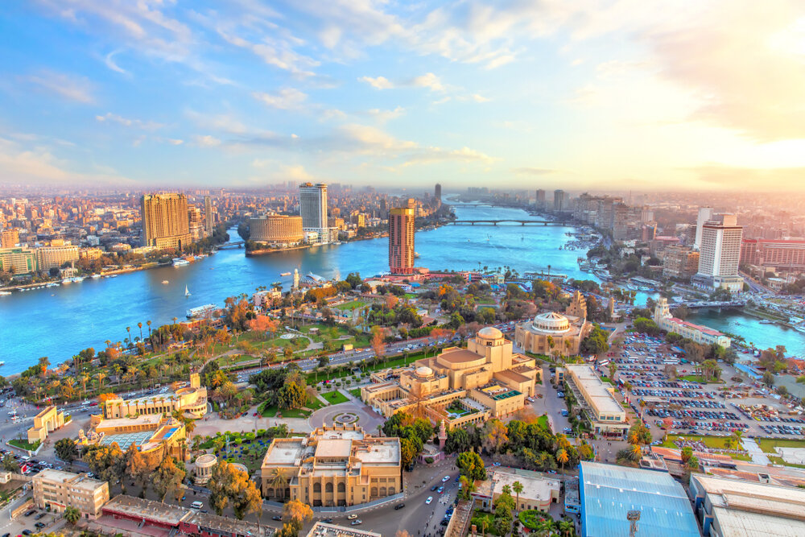

PERKEMBANGAN WAKAF DI DUNIA

berikut beberapa Negara yang mengelola sistem perwakafan :
Wakaf di Turki dikelola oleh Direktorat Jenderal wakaf dan mutawalli.
Adapun pelayanannya adalah :
pelayanan kesehatan seperti rumah sakit diantaranya rumah sakit yang didirikan
pada tahun 1843 di Istanbul oleh ibu dari sultan Abdul Mecit yang dikenal dengan Bezmi Alan Valid Sultan
Guraki Muslim, yaitu merupakan rumah sakit modern yang meiliki 1425 tempat tidur, dan 400 dokter, perawat
dan staff.
pelayanan Pendidikan sosila. Sampai saat in ada 32 imaret yang memberikan
layanan kepada lebih kurangnya 15.000 orang setiap hari nya. Beberapa bangunan wakaf juga digunakan untuk
mahasiswa yang tidak mampu, ada 50 asrama di 46 kota yang menampung kurang lebih 10.000 mahasiswa.
1. TURKI (Vakvive)
Sejak masa kekuasaan Turki Ustmani, wakaf telah menghidupi berbagai pelayanan
publik dan menompang pembiayaan berbagai bangunan seni dan budaya di Turki. Negara tersebut biasa
menyebutnya dengan vakvive, yang artinya pelayanan publik untuk mempromosikan moralitas, kebajikan,
penghargaan, dan cinta dalam masyarakat.
Sejak abad ke 15 wakaf produktif dan wakaf uang sudah berkembang, hingga sampai
sekarang masih tampak jelas dan dapat dijumpai di berbagai tempat seperti sekolah, masjid megah,
gedung-gedung kesenian dan kebudayaan, rumah sakit, perpustakaan, hotel-hotel dan lain-lain.
2. ARAB SAUDI
pelayanan kesehatan seperti rumah sakit diantaranya rumah sakit yang didirikan
pada tahun 1843 di Istanbul oleh ibu dari sultan Abdul Mecit yang dikenal dengan Bezmi Alan Valid Sultan
Guraki Muslim, yaitu merupakan rumah sakit modern yang meiliki 1425 tempat tidur, dan 400 dokter, perawat dan
staff.
3. BANGLADESH

Di banglaesh wakaf tunai memiliki peran penting dalam memobilisasi dana bagi
pengembangan wakaf property. Social Investment Bank Ltd (SIBL) yang mengintrodusir sertifikat wakaf tunai.
Sasaran pemanfaatan dana hasi pengelolaan wakaf tersebut antara lain :
peningkatan standar hidup orang miskin, rahabilitas orang cacat, membantu Pendidikan anak yatim piatu,
membangun sekolah, madrasah, universitas, mendanai riset dan lain-lain.
4. SUDAN

Pada tahun 1991, pemerintah mengeluarkan kebijakan yang memberikan banyak
keistimewaan kapada Badan Wakaf ini dengan penyediaan dana cadangan bagi lembaga wakaf Abdurrohman Kasdi 80
Jurnal Zakat dan Wakaf yang mengerjakan proyek tanah produktif, baik pada lahan pertanian baru, proyek wakaf
yang ada di kawasan pemukiman dan perdagangan yang dibangunnya dan beberapa terobosan Badan Wakaf Sudan, di
antaranya dalam bidang pendidikan dan kesehatan. Dalam bidang pendidikan, Badan Wakaf melakukan penggalangan
dana wakaf dari para dermawan untuk membangun asrama mahasiswa yang dekat dengan kampus.
5. MESIR

Wakaf telah memainkan peranan yang penting dalam menggerakkan roda perekonomian
dan memenuhi kebutuhan masyarakat Mesir. karena wakaf dikelola secara profesional dan dikembangkan secara
produktif. Perintis wakaf pertama kali di Mesir adalah seorang hakim di era Hisyam bin Abdul Malik, bernama
Taubah bin Namir al-Hadrami yang menjadi hakim pada tahun 115 H. Ia mewakafkan tanahnya untuk dibangun
bendungan dan manfaatnya dikembangkan secara produktif untuk kepentingan umat.
Wakaf yang dirintis oleh Taubah ini perkembangannya sangat pesat, terutama pada
masa kekuasaan Daulah Mamluk (1250-1517). Pada era kejayaan Mamluk, wakaf telah berkembang pesat dan dibarengi
dengan pemanfaatannya yang sangat luas untuk menghidupi berbagai layanan kesehatan, pendidikan, perumahan,
penyediaan makanan dan air, serta digunakan untuk kuburan. Contoh utama wakaf di era Mamluk ini adalah Rumah
Sakit yang dibangun oleh al-Mansur Qalawun yang mampu memenuhi kebutuhan kesehatan masyarakat Mesir selama
beberapa abad.
6. YORDANIA
Pengelolaan wakaf di Yordania ditangani oleh Kementerian Wakaf dan Urusan Agama
Islam yang didasarkan pada Undang-undang Wakaf No. 25/1947. Dalam Undang-undang ini disebutkan bahwa yang
termasuk dalam urusan Kementerian Wakaf dan Urusan Agama Islam adalah wakaf masjid, madrasah, lembaga-lembaga
Islam, rumahrumah yatim, tempat pendidikan, lembaga-lembaga Syari’ah, Dinamika Pengelolaan Wakaf di
Negara-Negara Muslim ZISWAF, Vol. 4, No. 1, Juni 2017 85 kuburan-kuburan Islam, urusan haji, dan urusan fatwa.
Undangundang ini diperkuat oleh Undang-undang Wakaf No. 26/1966 yang mempertegas peran Kementerian Wakaf dan
Urusan Agama Islam dalam pengelolaan wakaf.